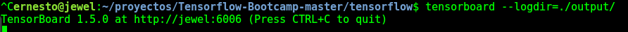
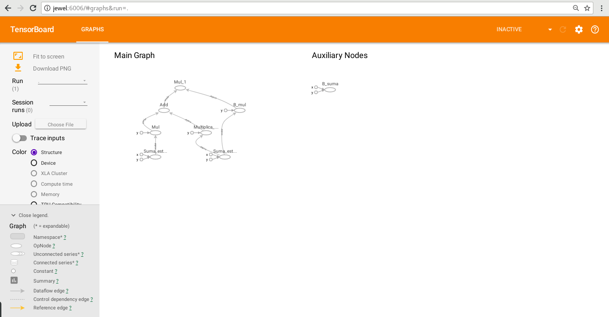
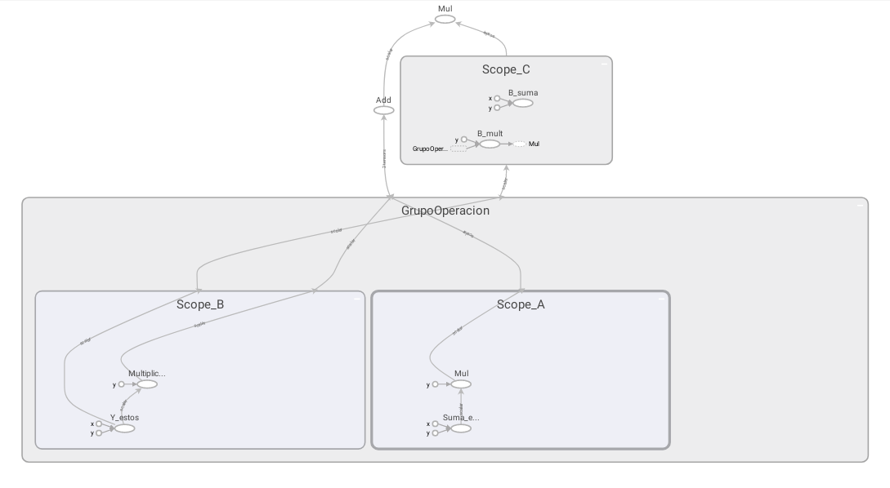

Visualización de objetos Graph con Tensorboard
Posted on lun 12 febrero 2018 in Tutorial Python • 3 min read
Continuando con los artículos sobre TensorFlow, en este caso se mostrará como se visualiza el objeto Graph por medio de TensorBoard.
Los artículos de la serie de TensorFlow los pueden revisar a continuación:
- Hola mundo desde Tensorflow
- Matemáticas básicas con Tensorflow
- Manejo de matrices con Tensorflow
- Variables y placeholders en Tensorflow
- Objeto Graph de Tensorflow
Este artículo se basa en el tutorial en inglés Visualization y la documentación de la página de TensorFlow.
Se va a tener dos formas de realizar el mismo ejercicio, el primero simplemente identificando las operaciones en el Objeto Graph, suma, multiplicación y división, luego se guarda el log de la sesión y se visualizará.
En el siguiente ejercicio, se harán las mismas operaciones, pero ahora se identifica los Objetos Graph con scopes, esto permitirá visualizar mejor dichos objetos y sus operaciones.
A continuación el primer ejercicio:
In [1]:
#Se importa Tensorflow
import tensorflow as tf
In [2]:
#Se suma 1+2
a = tf.add(1, 2,name="Suma_estos_numeros")
In [3]:
#Se multiplica el valor de la suma anterior por 3
b = tf.multiply(a, 3)
In [4]:
#se suma 4+5
c = tf.add(4, 5,name="Suma_estos")
In [5]:
#Se multiplica el resultado de la suma anterior por 6
d = tf.multiply(c, 6,name="Multiplica_estos_numeros")
In [6]:
#Se multiplica 4*5
e = tf.multiply(4, 5,name="B_suma")
In [7]:
#Se divide el resultado de la suma de 4+5 entre 6
f = tf.div(c, 6,name="B_mul")
In [8]:
#Se suma la multiplicación de a*3 más la multiplicación de c*6
g = tf.add(b, d)
In [9]:
#Se multiplica el resultado de la suma de b+d con el resultado de la división de c/6
h = tf.multiply(g, f)
In [10]:
#Se crea la sesión y se corre el resultado del objeto h y se salva en el directorio output.
with tf.Session() as sess:
writer = tf.summary.FileWriter("output", sess.graph)
print(sess.run(h))
writer.close()
63
In [ ]:
Ahora se ejecutará tensorboard, pasandole el directorio output donde se guardó el log de la sesión con sus operaciones.
tensorboard --logdir=./output/
El comando iniciará una sesión web de la aplicación tensorboard como lo muestra la siguiente figura:

Al abrir el navegador en localhost:6006 se tiene lo que muestra la siguiente figura:

Allí se visualizan las operaciones realizadas en la sesión y en el objeto Graph.
Pero, se puede agrupar los objetos Graph, y las operaciones para facilitar la visualización de los Objetos y sus operaciones.
A continuación la re-escritura del mismo ejercicio:
In [1]:
import tensorflow as tf
In [2]:
#Se define el nombre del objeto graph y los scopes A,B y C.
with tf.name_scope("GrupoOperacion"):
with tf.name_scope("Scope_A"):
a = tf.add(1, 2, name="Suma_estos_numeros")
b = tf.multiply(a, 3)
with tf.name_scope("Scope_B"):
c = tf.add(4, 5, name="Y_estos")
d = tf.multiply(c, 6, name="Multiplica_estos_numeros")
with tf.name_scope("Scope_C"):
e = tf.multiply(4, 5, name="B_suma")
f = tf.div(c, 6, name="B_mult")
g = tf.add(b, d)
h = tf.multiply(g, f)
In [3]:
#Se crea la sesión y se corre el resultado del objeto h
with tf.Session() as sess:
writer = tf.summary.FileWriter("output2", sess.graph)
print(sess.run(h))
writer.close()
63
Se vuelve a ejecutar tensorboard, pero en este caso abriendo el directorio output2:
tensorboard --logdir=./output2/
En la siguiente imagen se muestra los distintos Graph y cada operación que maneja cada uno.

De esta manera se tiene una mejor visualización de cada Objeto Graph y sus operaciones.
¡Haz tu donativo! Si te gustó el artículo puedes realizar un donativo con Bitcoin (BTC) usando la billetera digital de tu preferencia a la siguiente dirección: 17MtNybhdkA9GV3UNS6BTwPcuhjXoPrSzV
O Escaneando el código QR desde la billetera: